Configuring an Enterprise Application in Microsoft Azure Active Directory using SAML
Login to the Microsoft Azure portal.
Select Azure Active Directory:
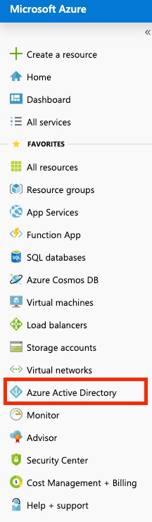 Select Enterprise applications:

Select New application:

Select Non-gallery application:

Enter a name for the application and click Add.
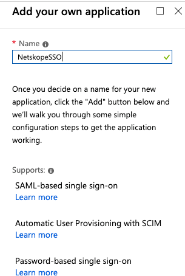 Select Single sign-on and then SAML.
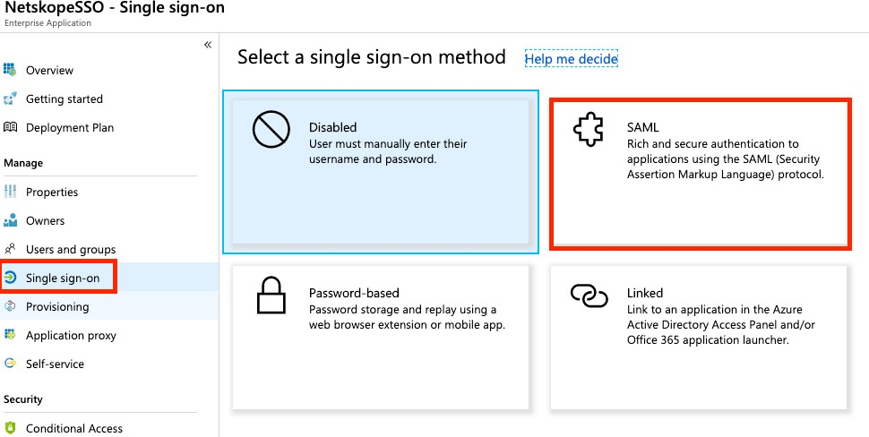 Click the pencil icon in the Basic SAML Configuration.
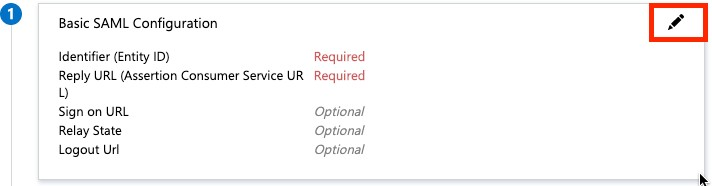 You will need URLs and information from Netskope at this point. Login to your tenant and go to Settings in the bottom of the left panel.

Click Administration and then SSO.

Copy the string from Service Provider Entity ID under the Netskope Settings section. The string should be similar to
Cdc7athjXYFU06mul.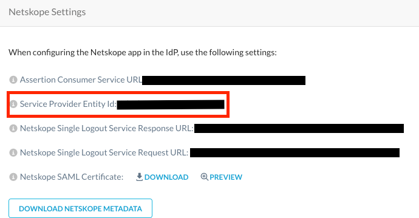 In the Azure Portal, paste that string into the Identifier (Entity ID) field:
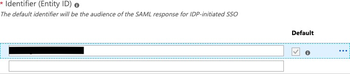 Copy the URL from the Assertion Consumer Service URL. The URL should be similar to
https://<tenantname>.goskope.com/saml/acs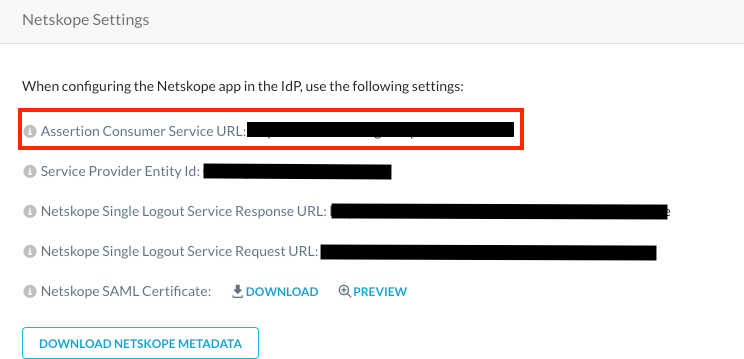 Paste the URL into the field for Reply URL (Assertion Consumer Service URL).

Click the pencil icon for User Attributes & Claims:

Click Add new claim:
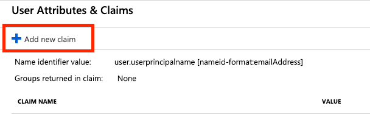 This pane is for the user attribute that will be passed to Netskope representing the admin role. Enter
admin-rolein the Name Field. You have two options for the Source Attribute field:If you want all users to have the same role then set this to a constant such as “Tenant Admin".
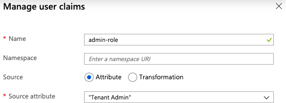 If you want to assign users individual admin roles then set the Source attributed to user.assignedroles. You will need to define the admin roles as described in the section Defining Custom Roles for Azure Active Directory Enterprise Application.
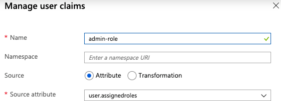
Download the SAML Signing Certificate in Base64 format:
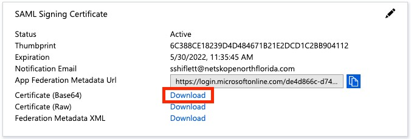 Save this for Step 6 in the next section, Configuring SSO settings in the Netskope tenant.